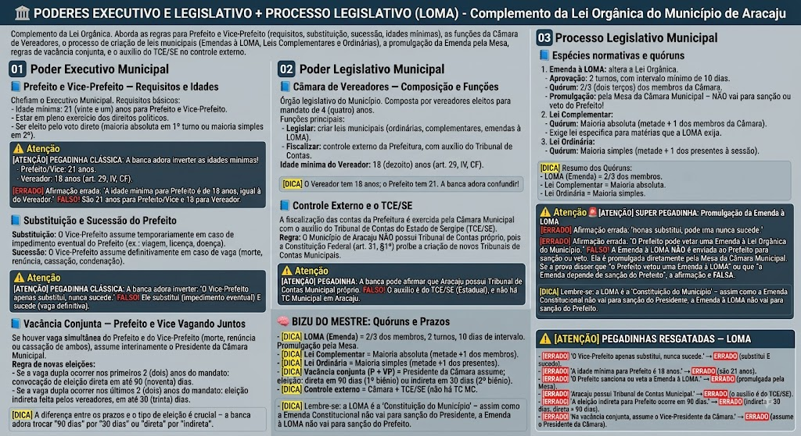

Prefeito e Vice-Prefeito — Requisitos e Idades
Prefeito e Vice-Prefeito — Requisitos e Idades
Chefiam o Executivo Municipal. Requisitos basicos:
- Idade minima: 21 (vinte e um) anos para Prefeito e Vice-Prefeito.
- Estar em pleno exercicio dos direitos politicos.
- Ser eleito pelo voto direto (maioria absoluta em 1º turno ou maioria simples em 2º).
[ATENCAO] PEGADINHA CLASSICA: A banca adora inverter as idades minimas!
- Prefeito/Vice: 21 anos.
- Vereador: 18 anos (art. 29, IV, CF).
[ERRADO] Afirmacao errada: 'A idade minima para Prefeito e de 18 anos, igual a do Vereador.' FALSO! Sao 21 anos para Prefeito/Vice e 18 para Vereador.
Substituicao e Sucessao do Prefeito
Substituicao e Sucessao do Prefeito
Substituicao: O Vice-Prefeito assume temporariamente em caso de impedimento eventual do Prefeito (ex.: viagem, licenca, doenca).
Sucessao: O Vice-Prefeito assume definitivamente em caso de vaga (morte, renuncia, cassacao, condenacao).
[ATENCAO] PEGADINHA CLASSICA: A banca adora inverter: 'O Vice-Prefeito apenas substitui, nunca sucede.'
FALSO! Ele substitui (impedimento eventual) E sucede (vaga definitiva).
Vacancia Conjunta — Prefeito e Vice Vagando Juntos
Vacancia Conjunta — Prefeito e Vice Vagando Juntos
Se houver vaga simultanea do Prefeito e do Vice-Prefeito (morte, renuncia ou cassacao de ambos), assume interinamente o Presidente da Camara Municipal.
Regra de novas eleicoes:
- Se a vaga dupla ocorrer nos primeiros 2 (dois) anos do mandato: convocacao de eleicao direta em ate 90 (noventa) dias.
- Se a vaga dupla ocorrer nos ultimos 2 (dois) anos do mandato: eleicao indireta feita pelos vereadores, em ate 30 (trinta) dias.
[DICA] A diferenca entre os prazos e o tipo de eleicao e crucial – a banca adora trocar \"90 dias\" por \"30 dias\" ou \"direta\" por \"indireta\".
Camara de Vereadores — Composicao e Funcoes
Camara de Vereadores — Composicao e Funcoes
Orgao legislativo do Municipio. Composta por vereadores eleitos para mandato de 4 (quatro) anos.
Funcoes principais:
- Legislar: criar leis municipais (ordinarias, complementares, emendas a LOMA).
- Fiscalizar: controle externo da Prefeitura, com auxilio do Tribunal de Contas.
Idade minima do Vereador: 18 (dezoito) anos (art. 29, IV, CF).
[DICA] O Vereador tem 18 anos; o Prefeito tem 21. A banca adora confundir!
Controle Externo e o TCE/SE
Controle Externo e o TCE/SE
A fiscalizacao das contas da Prefeitura e exercida pela Camara Municipal com o auxilio do Tribunal de Contas do Estado de Sergipe (TCE/SE).
Regra: O Municipio de Aracaju NAO possui Tribunal de Contas proprio, pois a Constituicao Federal (art. 31, §1º) proibe a criacao de novos Tribunais de Contas Municipais.
[ATENCAO] PEGADINHA: A banca pode afirmar que Aracaju possui Tribunal de Contas Municipal proprio. FALSO! O auxilio e do TCE/SE (Estadual), e nao ha TC Municipal em Aracaju.
Especies normativas e quoruns
Especies normativas e quoruns
1. Emenda a LOMA: altera a Lei Organica.
- Aprovacao: 2 turnos, com intervalo minimo de 10 dias.
- Quorum: 2/3 (dois tercos) dos membros da Camara.
- Promulgacao: pela Mesa da Camara Municipal – NAO vai para sancao ou veto do Prefeito!
2. Lei Complementar:
- Quorum: Maioria absoluta (metade + 1 dos membros da Camara).
- Exige lei especifica para materias que a LOMA exija.
3. Lei Ordinaria:
- Quorum: Maioria simples (metade + 1 dos presentes a sessao).
[DICA] Resumo dos Quoruns:
- LOMA (Emenda) = 2/3 dos membros.
- Lei Complementar = Maioria absoluta.
- Lei Ordinaria = Maioria simples.
[ATENCAO] SUPER PEGADINHA: Promulgacao da Emenda a LOMA
[ATENCAO] SUPER PEGADINHA: Promulgacao da Emenda a LOMA
[ERRADO] Afirmacao errada: 'O Prefeito pode vetar uma Emenda a Lei Organica do Municipio.'
FALSO! A Emenda a LOMA NAO e enviada ao Prefeito para sancao ou veto. Ela e promulgada diretamente pela Mesa da Camara Municipal.
Se a prova disser que \"o Prefeito vetou uma Emenda a LOMA\" ou que \"a Emenda depende de sancao do Prefeito\", a afirmacao e FALSA.
[DICA] Lembre-se: a LOMA e a \"Constituicao do Municipio\" – assim como a Emenda Constitucional nao vai para sancao do Presidente, a Emenda a LOMA nao vai para sancao do Prefeito.
BIZU DO MESTRE: Quoruns e Prazos
BIZU DO MESTRE: Quoruns e Prazos
[DICA] LOMA (Emenda) = 2/3 dos membros, 2 turnos, 10 dias de intervalo. Promulgacao pela Mesa.
[DICA] Lei Complementar = Maioria absoluta (metade +1 dos membros).
[DICA] Lei Ordinaria = Maioria simples (metade +1 dos presentes).
[DICA] Vacancia conjunta (P + VP) = Presidente da Camara assume; eleicao: direta em 90 dias (1º bienio) ou indireta em 30 dias (2º bienio).
[DICA] Controle externo = Camara + TCE/SE (nao ha TC Municipal em Aracaju).
[DICA] Idades: Prefeito/Vice = 21 anos; Vereador = 18 anos.
[ATENCAO] PEGADINHAS RESGATADAS — LOMA
[ATENCAO] PEGADINHAS RESGATADAS — LOMA
[ERRADO] 'O Vice-Prefeito apenas substitui, nunca sucede.' → ERRADO (substitui E sucede).
[ERRADO] 'A idade minima para Prefeito e 18 anos.' → ERRADO (sao 21 anos).
[ERRADO] 'O Prefeito sanciona ou veta a Emenda a LOMA.' → ERRADO (promulgada pela Mesa).
[ERRADO] 'Aracaju possui Tribunal de Contas Municipal.' → ERRADO (o auxilio e do TCE/SE).
[ERRADO] 'A eleicao indireta para Prefeito ocorre em 90 dias.' → ERRADO (indireta = 30 dias, direta = 90 dias).
[ERRADO] 'Na vacancia conjunta, assume o Vice-Presidente da Camara.' → ERRADO (assume o Presidente da Camara).
Mapa-mental
Material de estudo: Poderes Executivo e Legislativo + Processo Legislativo (LOMA)
Material complementar · Ver fonte no GitHub
Processo Legislativo Municipal
Mapa-mental
